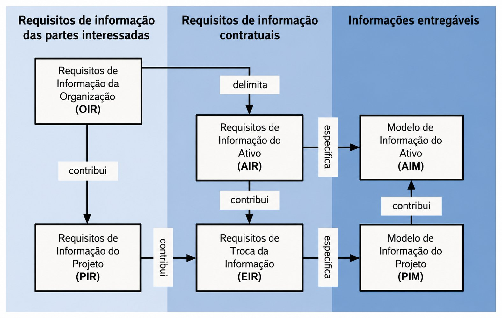
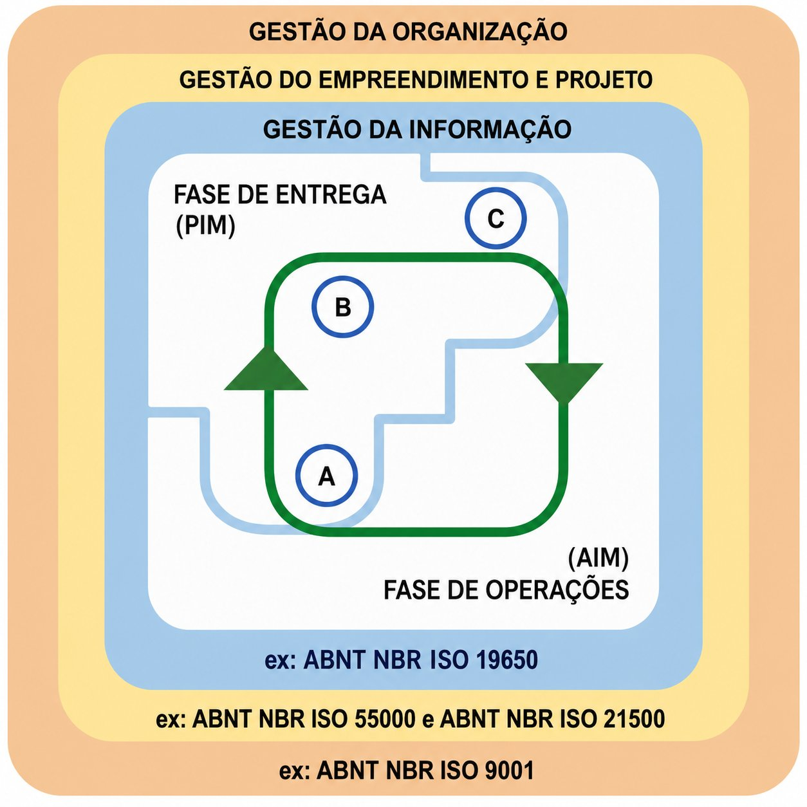
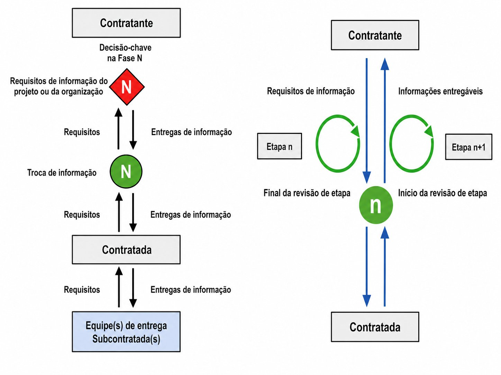
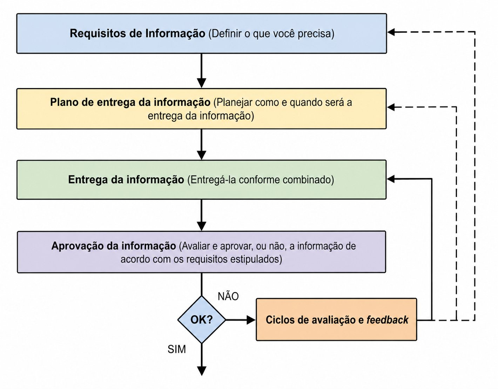
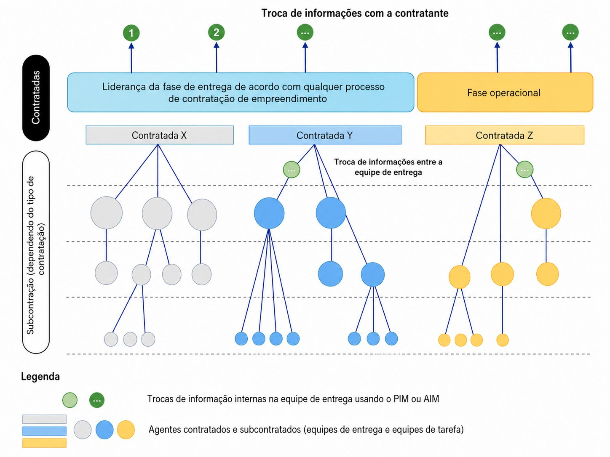
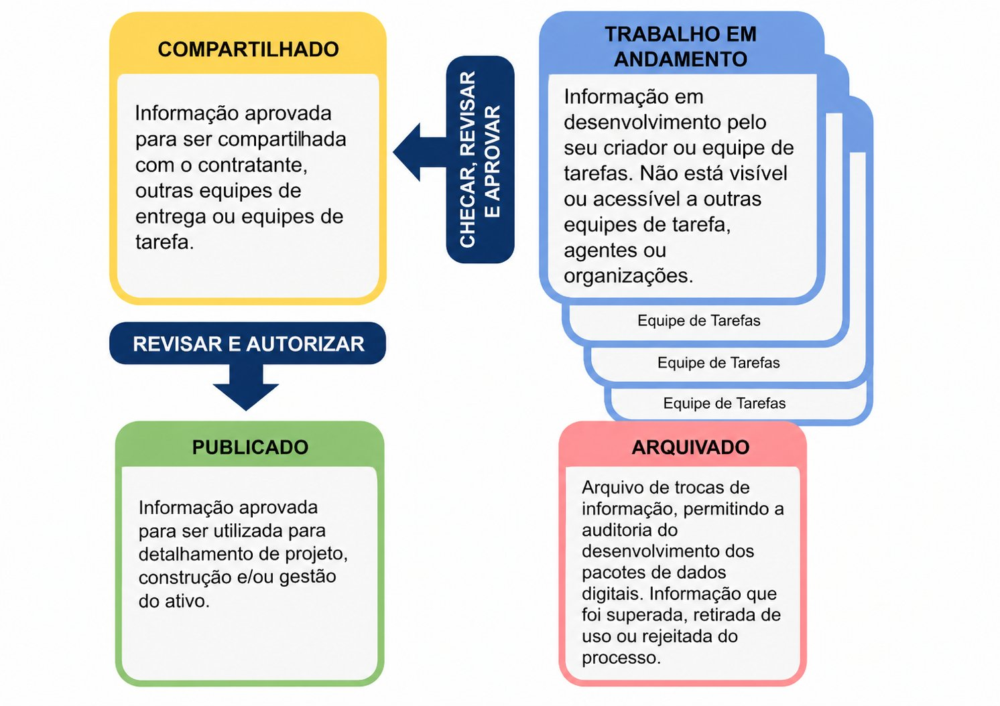
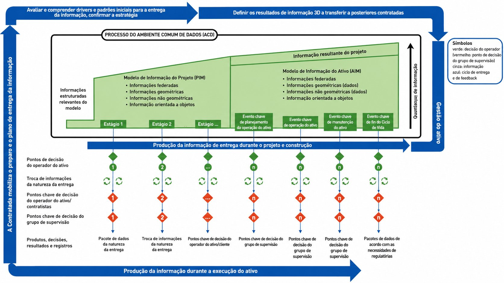

Como ler este material
Norma
Conceito normativo da ISO 19650
Exemplo
Ilustração aplicada — caráter didático
ISO 19650-1:2022 — cadeia de requisitos e entregáveis
OIR
→
AIR
→
EIR
→
BEP
→
IDS
→
MIDP
→
AIM
→
ENC*
Necessidade → Requisito → Plano → Produção → Entrega → Encerramento
ISO 19650-2:2022 — §5.1 a §5.8
§5.1 Determinação das necessidades
GRI*
→
RIR*
→
DMI*
→
PIP*
→
MPI*
→
REF*
→
CDE
→
PRI*
§5.2 Licitação → §5.3 Resposta → §5.3.7 Consolidação
EIR
→
BEP-P*
+
CAP*
+
CCT*
+
MOB*
+
RRC*
→
RLC*
§5.4 Contratação → §5.5 Mobilização
BEP-D*
→
MRD*
+
EIR-D*
→
TIDP
→
MIDP
+
DCO*
+
DCS*
→
MOB*
§5.6 Produção (6 etapas condensadas) → §5.7 Entrega → §5.8 Encerramento
GEN*
→
RMI*
→
EMI*
→
ENC*
Os itens representam relações conceituais · Exemplos têm caráter ilustrativo · Clique em qualquer pill para abrir o documento · Validação final: norma aplicável ao contexto
Diagramas normativos — ISO 19650-1:2022 · Clique para ampliar
Hierarquia de requisitos e entregáveis

ISO 19650-1:2022 · Figura 2 · Hierarquia dos requisitos de informação
Camadas de gestão da organização

ISO 19650-1:2022 · Figura 3 · Ciclo de vida genérico da gestão de informações
Decisões-chave e fluxo de informação

ISO 19650-1:2022 · Figura 6 · Decisões-chave e informação fornecida
Ciclo de etapas e revisão da informação

ISO 19650-1:2022 · Figura 7 · Verificação da informação antes e depois de uma troca
Equipes de entrega e transferência PIM → AIM

ISO 19650-1:2022 · Figuras 8 e 9 · Entrega de informações pelas equipes de entrega
CDE — estados do contêiner de informação

ISO 19650-1:2022 · §12 · Figura 10 · Estados S0–S2–S5
Visão geral do processo de gestão da informação — crescimento do AIM ao longo dos estágios

ISO 19650-1:2022 · Figura 11 · Visão geral e ilustrada do processo de gestão da informação
Diagramas recriados na linguagem visual do projeto com base nas figuras da ABNT NBR ISO 19650-1:2022 · Clique em cada card para ampliar · Caráter interpretativo — consulte a norma original para uso normativo
ISO 19650-3 — Kanban da fase operacional de ativos
A ISO 19650-3 aplica a mesma lógica da parte 2 à fase de operação. O Kanban interativo cobre os 16 cards operacionais — do AIR e EIR operacionais ao ciclo §5.1 a §5.8 completo, com eventos-gatilho, BEP operacional, MIDP e agregação ao AIM. Cada card tem exemplos aplicados com dados reais de FM.
ISO 19650-4 — Fluxo interativo WIP → Published
O fluxo SVG interativo da ISO 19650-4 está na aba Kanban. Mostra o ciclo completo WIP → Decisão A → Shared → Decisão B → Published, com os estados do CDE, os atores de cada etapa, a exceção §6.4 e os 6 critérios de qualidade §7.1 a §7.6 — todos clicáveis com exemplos concretos.
ISO 19650-5 — Processo de triagem ST1–ST4
O diagrama SVG interativo da ISO 19650-5 está na aba Kanban. Mostra a avaliação de sensibilidade, a triagem ST1–ST4 com exemplos brasileiros (aeroporto, sede de governo, estádio), os controles do Anexo B (Pessoal, Físico, Tecnológico, Informação) e o fluxo §4 → §9.
Guia de uso · ISO 19650
Escolha seu ponto de entrada
Cada perfil tem um caminho distinto pela norma — clique no card para ir direto à aba correspondente
ISO 19650-1Conceitos
ISO 19650-1 — ConceitosDefine o vocabulário e a arquitetura de toda a norma. OIR, AIR, EIR, BEP, AIM — tudo começa aqui. Leia primeiro.
→
ISO 19650-2Entrega
ISO 19650-2 — Entrega BIMRege todo o processo de contratação e entrega de modelos — do edital ao handover. §5.1 a §5.8.
→
ISO 19650-3Operação
ISO 19650-3 — Gestão de ativosAplica a mesma lógica da parte 2 à fase operacional — manutenção, FM, eventos-gatilho e atualização do AIM.
+
ISO 19650-4Troca
ISO 19650-4 — Troca de informaçãoDefine como cada arquivo percorre WIP → Shared → Published. Complementa as partes 2 e 3 com 6 critérios de qualidade.
+
ISO 19650-5Segurança
ISO 19650-5 — SegurançaSegurança da informação em ativos sensíveis. Triagem ST1–ST4, estratégia, plano de gestão e cadeia de fornecimento.
ISO 19650-1
Ponto de partida
Estou começando com BIM e normas
Entenda a cadeia de requisitos antes de qualquer processo contratual. OIR → AIR → EIR → BEP → AIM é a espinha dorsal de tudo.
Trilha →
OIR
→
EIR
→
BEP
→
AIM
Abrir ISO 19650-1 →
ISO 19650-2
Contratante · Gestor
Sou contratante ou gestor de projeto
Você define o EIR, avalia o BEP da equipe, aprova o MIDP e aceita o modelo entregue. Seu papel vai do §5.1 ao §5.8.
Foco →
EIR
→
MIDP
→
§5.7 Aceite
→
§5.8 Encerramento
Abrir ISO 19650-2 →
ISO 19650-2/3
BIM Manager · Contratado · FM
Produzo, coordeno ou entrego informação
Você elabora o BEP, produz no CDE e entrega o modelo. Cada arquivo percorre o ciclo WIP → Shared → Published da ISO 19650-4.
Ciclo →
BEP
→
TIDP
→
WIP
→
Published
Abrir ISO 19650-3 →
ISO 19650-4
Qualidade · CDE
Preciso entender o processo de troca
Como um arquivo sai do WIP, passa pela Decisão A, entra em Shared, passa pela Decisão B e chega a Published — com os 6 critérios §7.
Fluxo →
WIP
→
Dec. A
→
Shared
→
Published
Abrir ISO 19650-4 →